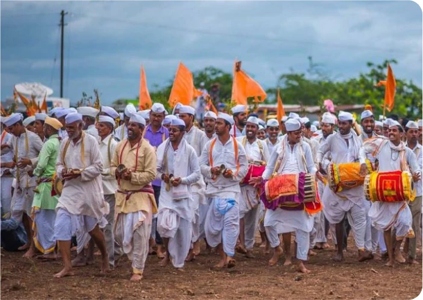

About SMSM Vari
Healthcare Without Boundaries
Sahyadri Manav Seva Manch Vari Trust was founded on a single conviction: that geography should never be a barrier to dignified medical care. We carry healthcare into Maharashtra's most underserved spaces — remote tribal villages, disaster-affected communities, rural fair grounds, and pilgrimage routes — wherever people have the least access and need it most.
Our Mission
We mobilise doctors, nurses, trained volunteers, and essential supplies to bring healthcare to places the system rarely reaches. From wound-care stations along pilgrimage routes to health camps in remote tribal belts and emergency response during floods and disasters — our teams go wherever there is need and no one else going.
Our founding programme — the Pandharpur Aarogyawari — has provided free medical care to thousands of Varkaris every Aashad Ekadashi since 1984. But our work extends well beyond the Wari: year-round health camps in tribal villages, disaster relief medical units, and medical support at regional fairs and pilgrimages across Maharashtra. Wherever communities are underserved, that is where we belong.

What We Stand For
Seva First
Every decision begins with one question: what does this person need right now? We place no condition — geographic, financial, or otherwise — on the care we provide.
Medical Excellence
Trained doctors, nurses, and paramedics deliver standardised protocols whether we are at a pilgrimage camp, a flood relief site, or a tribal health camp deep in the hills.
Community Driven
Our volunteers are local — they speak the language, know the terrain, and often share the hardship of those they serve. This is not charity from a distance.
Transparency
Every donation is accounted for. We publish yearly impact reports so you can see exactly where your support goes — whether it bought medicines or fuel for an ambulance.
Our Leadership

Dr. Anjali Deshmukh
Managing Trustee & CMO
With over 25 years of experience in public health, Dr. Deshmukh coordinates the entire medical strategy across all camps, ensuring standardised care protocols wherever our teams operate.

Mr. Prakash Patil
Trustee & Logistics Head
A veteran in large-scale event management, Mr. Patil oversees the complex logistics of setting up mobile camps, supply chains, and volunteer deployment across every region we serve.
Trustee Name 3
Trustee & [Designation]
Brief bio describing this trustee's background, responsibilities, and contribution to the trust's work.
Trustee Name 4
Trustee & [Designation]
Brief bio describing this trustee's background, responsibilities, and contribution to the trust's work.
Our Members
Member Name 1
Designation
Member Name 2
Designation
Member Name 3
Designation
Member Name 4
Designation
Member Name 5
Designation
Member Name 6
Designation
Join the Mission
Whether you donate, volunteer, or simply spread the word — every act of support helps us reach one more village, one more patient, one more person who needs care and has nowhere else to turn.